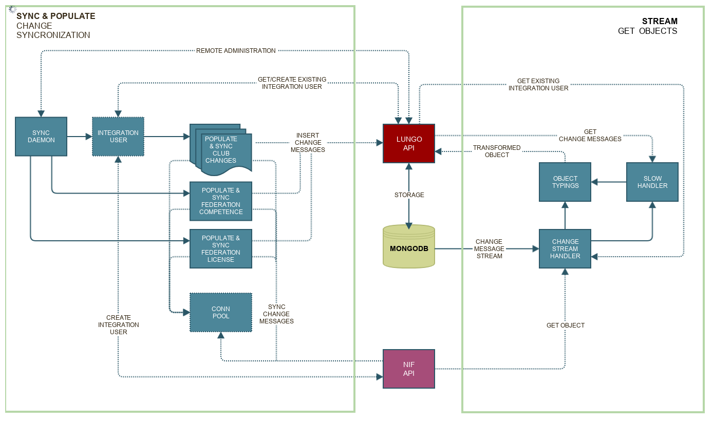

Welcome to NIF Integration’s documentation!¶
Danger
Incomplete documentation before 0.1.0 is released
Attention
Requires Python >= 3.6
NIF Integration¶
This project is an integration with the synchronization api provided by NIF for the NLF membership api.
Listen on changes:
from stream import NifStream
stream = NifStream()
stream.run()
Start synchronization daemon:
python syncdaemon.py
Start synchronization workers:
import Pyro4
proxy = Pyro4.Proxy('PYRO:nif.integration@localhost:5555')
proxy.start_workers() # Returns immediately with None
proxy.get_workers_status() # Returns list of statuses
proxy.shutdown() # Shutdown all workers, rpc and exit daemon context
Sync & stream
Eve Api
Tools
Settings